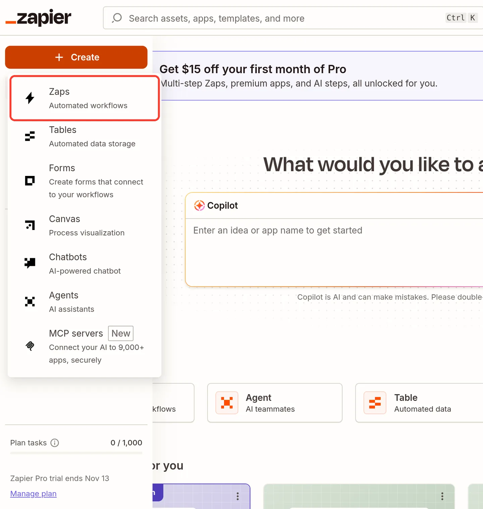
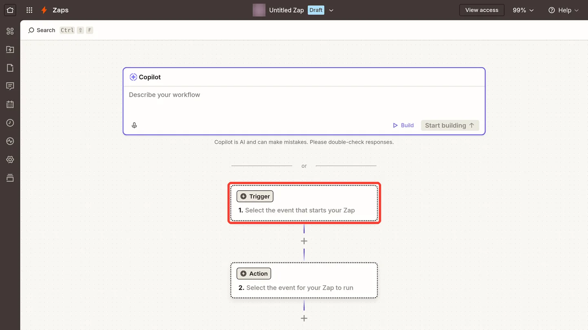
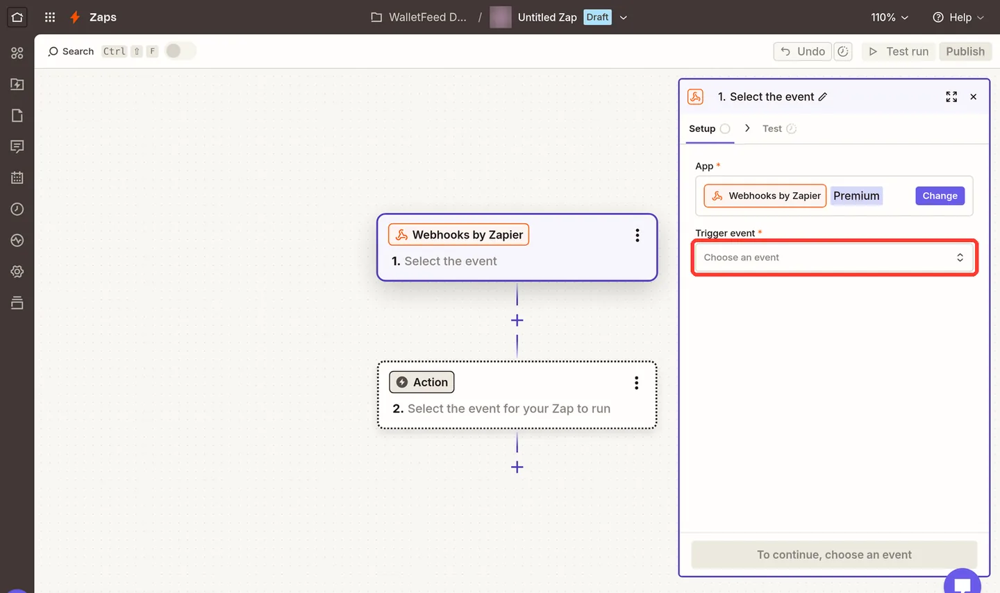
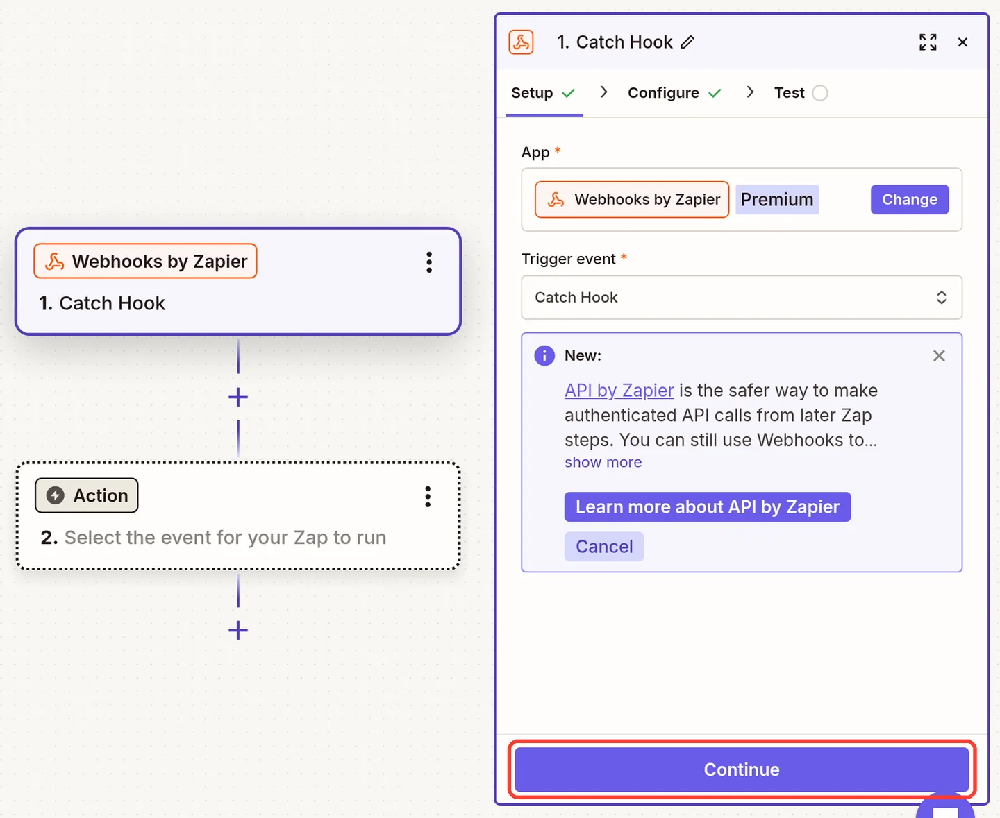
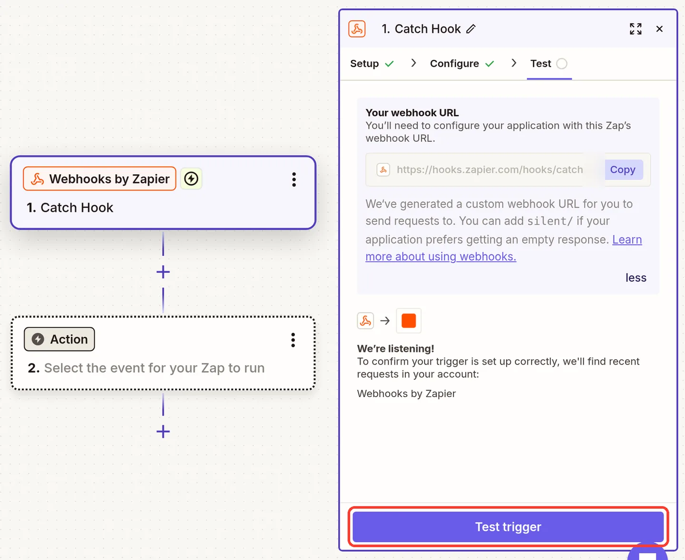
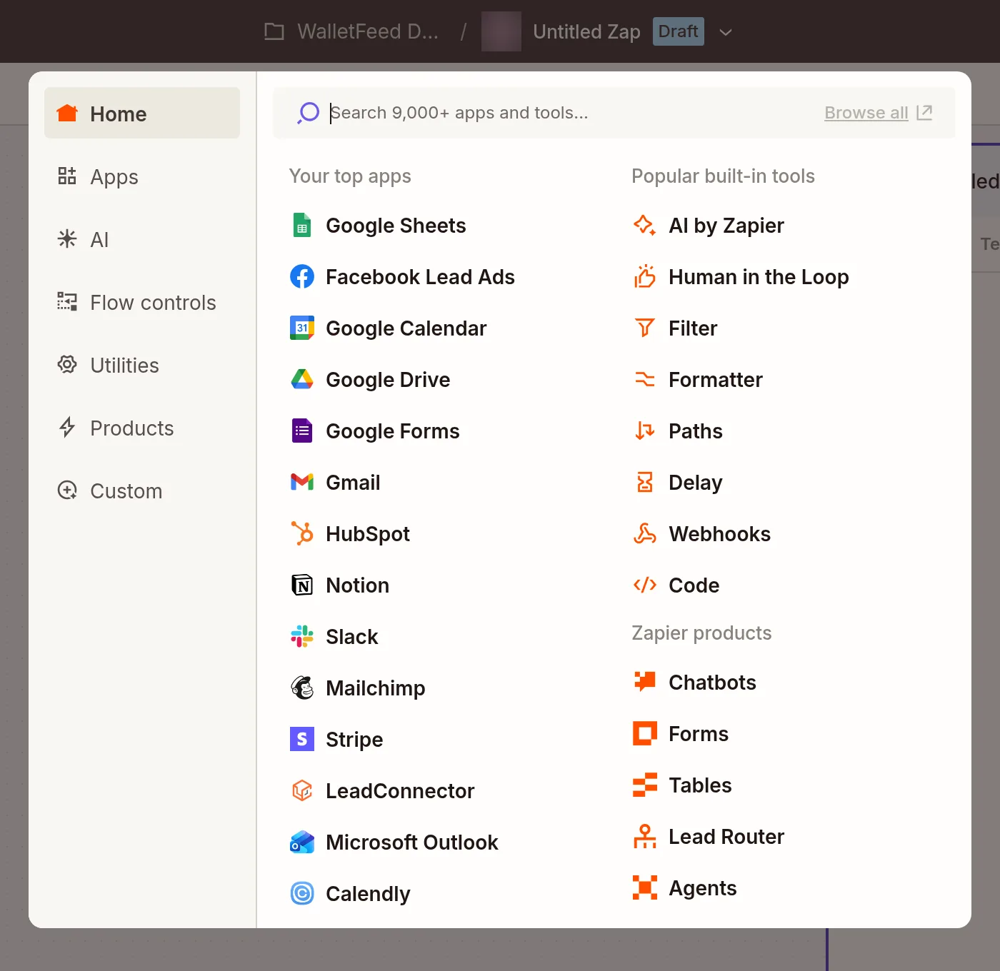

Send Apple Card transactions to Zapier
WalletFeed sends your Apple Card, Apple Cash and Savings transactions from your iPhone to Zapier. Your Zap starts one time each month, or one time for each transaction. In Zapier, you make a Zap with the Webhooks by Zapier trigger Catch Hook. Then you paste the webhook URL of the trigger into WalletFeed.
Before you start
You must have:
- An iPhone with iOS 26 or a newer version. WalletFeed is available only in the US.
- WalletFeed, with access to your Apple Card, Apple Cash or Savings account.
- WalletFeed Pro, a subscription with a 1-week free trial, or a one-time Lifetime purchase. WalletFeed Pro is necessary for all destinations.
- A Zapier account on a plan that includes Webhooks by Zapier: Professional, Team or Enterprise. The Zapier Free plan does not include it.
- A computer, for the steps on the Zapier website.
Step 1: Make a Zap with a Catch Hook trigger
The Catch Hook trigger has its own webhook URL. When WalletFeed sends data to this URL, the Zap starts.
-
On your computer, open Zapier.
-
Sign in to your Zapier account. If you do not have an account, make one on Zapier's sign-up page.
-
Click + at the top of the left sidebar.

-
Click Zaps.

-
Click the Trigger box.

-
In the search box, type
Webhooks. -
Click Webhooks. After you select it, Zapier shows its full name, Webhooks by Zapier.

-
Under Trigger event, click Choose an event.

-
Click Catch Hook, not Catch Raw Hook.

-
Click Continue.

Zapier can also show a box about API by Zapier. WalletFeed does not use it.
-
On the Configure tab, make sure that Pick off a Child Key is empty. If this field has text, Zapier keeps only a part of each transaction.
-
Click Continue.

-
On the Test tab, under Your webhook URL, click Copy.

The field shows only the start of the URL, but Copy copies the full URL.
-
Keep this page open. You use it again in Step 3.
Step 2: Add Zapier in WalletFeed
-
On your iPhone, open WalletFeed.
-
Optional: If you select Each Transaction in step 8, you can set Settings › Sync › Initial History to Today.
Then Zapier receives only the transactions from today.

-
Tap Destinations.
-
Tap + at the top of the screen.

-
Under Automations, tap Zapier. You can also type
Zapierin the search field. -
If WalletFeed shows the WalletFeed Pro screen, get WalletFeed Pro there. The Zapier screen then opens.
-
Paste the URL into Catch Hook URL. WalletFeed keeps the URL in the Keychain on your iPhone, because a person with the URL can start your Zap.

-
In Send, select Monthly or Each Transaction.
With Monthly, Zapier receives one request 5 days after the end of each month. The request contains all the transactions of that month, and the Zap starts one time. Monthly is the default.
With Each Transaction, the Zap starts one time for each new or changed transaction.
-
Tap Add. WalletFeed sends a sample to Zapier.
With Each Transaction, the sample is one transaction. With Monthly, the sample is one month that contains the same transaction.
-
Read the message Send Transactions to Zapier? It tells you the data that Zapier receives, from which accounts and from which date.
-
Tap Send. If you tap Cancel, WalletFeed does not add the destination.
Destinations then shows the new Zapier destination.
Step 3: Find the sample in Zapier
-
On your computer, in the Zap editor, click Test trigger.

-
Click request A.

Zapier shows the fields of the sample. With Each Transaction, Merchant is WalletFeed and Amount is -4.2. With Monthly, Zapier shows the fields of the month, and the transaction as a line item.
-
Click Continue with selected record. Zapier then shows the apps for the Action step.
Step 4: Add the Action step in Zapier
The Action step tells Zapier what to do with the data, for example add a row to a Google Sheets spreadsheet.
-
Select the app that receives the data, for example Google Sheets.

-
Do the steps that Zapier shows for this app.
-
Where the action must have a value from the transaction, use the fields from Step 3, such as Merchant and Amount.
With Monthly, Zapier shows the transactions of the month as line items. Use an action that accepts line items, for example Create Multiple Spreadsheet Rows in Google Sheets. You can also use Looping by Zapier.
-
Click Publish. A Zap that is a draft does not do its action.
-
In Automations › Zaps, find your Zap. If its Status switch is off, set it to on.

Zapier counts one task for each action step that runs, and the trigger uses no task. With Monthly, the Zap runs one time each month. With Each Transaction, it runs one time for each change.
Data that Zapier receives
Your transactions go from your iPhone directly to Zapier. WalletFeed has no account and no WalletFeed servers. After Zapier receives your transactions, Zapier's terms are applicable to them.
With Monthly, WalletFeed sends one request for each month. The request has these fields:
| Field | Value |
|---|---|
event |
month |
month |
The month in your time zone, for example 2026-10 |
count |
The number of transactions in transactions |
total |
All the amounts of the month, added together, for example -16.95 |
currency |
The currency code of total, for example USD |
transactions |
The transactions of the month, newest first. Each transaction has the fields in the next table, but not Event. |
If the month has more than one currency, total and currency have no value.
With Each Transaction, the Zap starts one time for each change to a transaction. Zapier shows the data of each change as these fields:
| Field in Zapier | Value from Wallet |
|---|---|
| Event | created the first time that WalletFeed sends the transaction, updated for a later change, and deleted when Wallet removes it |
| ID | The transaction ID from Wallet. It stays the same when the transaction changes. |
| Date | The date of the purchase in your time zone, for example 2026-10-29 |
| Merchant | The merchant name, or the description if Wallet has no merchant name |
| Amount | Negative for a purchase, for example -84.12, and positive for a refund or a payment, for example 49 |
| Currency | The currency code, for example USD |
| Category | The WalletFeed category, for example Groceries |
| Status | The Wallet status: pending, authorized or booked |
| Pending | true while the purchase is pending or authorized, and false after it posts |
| Account | The Wallet account, for example Apple Card |
| Description | The description from Wallet |
| Type | The type of transaction, for example pointOfSale or refund |
| Mcc | The merchant category code, for example 5411 |
| Foreign Amount and Foreign Currency | The amount and the currency code of a purchase in a different currency |
| querystring | A field that Zapier adds. It is always empty. |

For a deleted transaction, the request has only Event and ID. A field is empty when Wallet does not give a value for it, for example Foreign Amount for a purchase in dollars. In Zapier, an amount has no zeros at the end, for example 49 for $49.00.
Sync times and changes
To send to Zapier while WalletFeed is closed, Background Sync must be on in Settings › Sync. Background Sync is on until you set it to off.
Monthly
WalletFeed sends each month at the first sync on or after the 6th day of the next month. For example, Zapier receives October on or after November 6. If the filter keeps no transactions of a month, Zapier receives nothing for that month.
If a charge is pending when WalletFeed sends the month, its pending value is true. WalletFeed does not send the charge again after it posts. After WalletFeed sends a month, it does not send changes to that month.
If a sync stops after WalletFeed sends a month, Zapier can receive the same month two times. A Zap can use Storage by Zapier, or a step that finds a row, to find a month value that it received before.
Each Transaction
While WalletFeed is open, Zapier receives changes in seconds. When WalletFeed is closed, iOS starts WalletFeed in approximately 1 hour or less after a change in Wallet.
One transaction can start the Zap more than one time:
- A new purchase comes with Event
createdand Statuspending. - When the purchase posts, the same ID comes again with Event
updatedand Statusbooked. - If the bank declines a pending charge, or Wallet removes a transaction, Zapier receives Event
deletedand the ID.
A refund is a different transaction, with a positive Amount and the Type refund.
If WalletFeed stops during a sync, it sends the same changes again at the next sync. Zapier does not look for duplicates. Thus, a Zap that adds a row for each change can add a transaction two times. A Zap that first finds the row by ID, and then updates it, keeps one row for each transaction. This Zap uses two tasks for each change.
Send previous transactions
A new Zapier destination also receives previous transactions, from the start date in Settings › Sync › Initial History. Initial History is All until you change it.
With Each Transaction, Zapier receives a maximum of 30 days of previous transactions. With Monthly, there is no limit of 30 days. The start date moves back to the first day of its month, and Zapier receives one request for each previous month. WalletFeed sends the newest month first.
To send more transactions, use Send History:
-
In Destinations, tap the Zapier destination.
-
Tap Send History.
-
Select a period: 30 Days, 90 Days, 1 Year or All.
-
In the message Send History to Zapier?, tap Send.
With Monthly, the message shows "Each month runs your Zap once." With Each Transaction, it shows "Each transaction runs your Zap."
WalletFeed sends the newest transactions first. With Monthly, the period starts on the first day of its month, and Send History also sends the months that Zapier received before. Each Zap run uses tasks in Zapier. To stop, tap Send History, then tap Stop Sending.
Change or delete the destination
Send only some transactions
-
In Destinations, tap the Zapier destination.
-
Set the Filter switch to on.

-
Change Include, Minimum, Include Pending, Accounts or Categories as necessary.
With Each Transaction and no filter, you can also tap Turn On Filter below Send. To stop for a time, set the Enabled switch to off.
Change Send
-
In WalletFeed, open the Zapier destination.
-
In Send, select Monthly or Each Transaction.
With Monthly, Zapier receives the month of the change 5 days after the end of that month. The request contains all the transactions of the month. These include the transactions that Zapier received before. With Each Transaction, Zapier receives the changes from that time. To send previous transactions, use Send History.
-
Tap Send Test.
-
On your computer, open the Zap in Zapier.
-
On the Test tab of the trigger, click Test trigger.
-
Make sure that the Action step uses the fields of your new selection in Send.
Replace the URL
If you make a new Zap, give its URL to WalletFeed:
- In Zapier, copy the webhook URL of the new Zap, as in Step 1.
- In WalletFeed, open the Zapier destination.
- Tap Replace URL.
- Paste the new URL into Catch Hook URL.
- Tap Replace. WalletFeed sends a sample transaction to the new URL before it keeps the URL.
The destination screen shows Webhook with hooks.zapier.com, not the full URL.
Delete the destination
- In WalletFeed, open the Zapier destination.
- Tap Delete, then tap Delete again in the message.
The transactions that WalletFeed sent stay in Zapier, and in the apps that your Zap sent them to.
Zapier accepts requests at the URL until you set the Zap to off or delete it. To delete the Zap, open it in Zapier, then select Delete in the menu of the Zap name.
If something goes wrong
If you cannot tap Add
The text in Catch Hook URL is not a Zapier webhook URL. The URL must start with https://hooks.zapier.com/hooks/.
- In Zapier, open the Test tab of the Catch Hook trigger.
- Click Copy.
- In WalletFeed, delete the text in Catch Hook URL.
- Paste the URL again.
If WalletFeed shows "The webhook refused the test"
Zapier did not accept the sample transaction, because the URL is not correct or Zapier stopped the URL.
- In Zapier, open Automations › Zaps.
- If you deleted the Zap, make a new Zap, as in Step 1.
- Copy the URL again from the Test tab of the trigger.
- In WalletFeed, paste the URL into Catch Hook URL, then tap Add.
If the destination shows "Rejected (HTTP 404)"
Zapier did not accept the transactions, because the Zap is off or someone deleted it. Zapier can stop the URL up to several hours after the Zap goes off.
- In Zapier, open Automations › Zaps.
- If your Zap is in the list, set its Status switch to on.
- If your Zap is not in the list, make a new Zap, as in Step 1.
- Give the URL of the new Zap to WalletFeed, as in Replace the URL.
If Zapier finds no request
You clicked Test trigger before WalletFeed sent the sample transaction.
- In WalletFeed, open the Zapier destination.
- Tap Send Test. WalletFeed sends the sample transaction again.
- In Zapier, click Find new records.
Zapier loads a maximum of 3 records at a time, and not always the newest ones. This is not a problem. When the Zap is on, it starts for each month or for each change.
If the Zap does not do its action
The Zap is a draft, or it is off. A draft Zap receives the requests but does not do its action, and WalletFeed shows no error.
- In the Zap editor, click Publish.
- In Automations › Zaps, set the Status switch of the Zap to on.
If the Zap stops after the Zapier trial
After the 14-day trial, the Zapier account is on the Free plan. The Free plan does not include Webhooks by Zapier.
- In Zapier, click Upgrade.
- Select a plan that includes webhooks, for example Professional.
If the Zap starts only one time each month
Send is Monthly, which is the default. With Monthly, Zapier receives each month 5 days after the end of the month.
To start the Zap for each transaction, do these steps:
- In WalletFeed, open the Zapier destination.
- In Send, select Each Transaction.
- Tap Send Test.
- On your computer, open the Zap in Zapier.
- On the Test tab of the trigger, click Test trigger.
- Change the Action step to use the fields of one transaction.
If one transaction makes two rows
With Each Transaction, the Zap starts for each change to a transaction, and WalletFeed can send the same change again.
- In the Zap, add a step that finds the row by ID, before the step that adds a row.
- If the step finds a row, update that row.
If Zapier receives transactions only while WalletFeed is open
Background Sync is off.
- In WalletFeed, open Settings › Sync.
- Set the Background Sync switch to on.
Related
Updated October 30, 2026